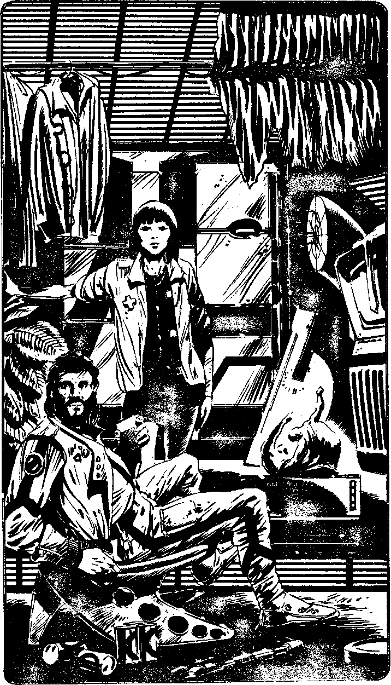

359
The Rec Room is where the crew eat, rest and play. Several vidbooths line one wall as does a large nutritional dispenser. Various personal effects and pieces of machinery lie haphazardly about. A holo-viewer is on hold, the small projected figures frozen in place - it looks like some kind of horror-holo feature, possibly a holo-nasty. The machine is labelled 'Kepy Achov's - keep off!'. Absently, you note that the holo-cassette is called 'Night of the Star-Vampires'. Two people, one an oriental of slim build, with the insignia of a medtech on her overalls, the other a heavily built, neat looking man, with a carefully trimmed beard and thick black hair are seated at a long table. They look up in astonishment at the sight of you, they probably haven't seen another human face for weeks. You tell them your story and the bearded man says, 'I see. You're lucky to have survived. I'm Braxton Bragg, the manager, you can call me Brax. This is Tsu Tsang, our Medic and general boffin,' and he indicates the oriental woman next to him. 'It looks like you'll be stuck here until the Relief Ship arrives, I'm afraid. That will be about two weeks from now. It'll cost too much to send a starship just for you! Tsu Tsang will show you your cabin and then you can come back here. We haven't spoken to anyone else for two months you'll be a welcome change,' and he smiles warmly at you.
Tsu Tsang walks over to you, and you notice she is limping. She says tersely, 'Drill bit fell on my foot two weeks ago, broke it badly.' She shows you into a tiny cabin with a single bunk, a few doors on from the Rec Room. It is opposite a large room. 'Make yourself at home,' she says wryly and leaves. A minute later, there is a knock at the door and Sil McReady comes in.' Hi, Brax asked me to show you around if you'd like? Its a pretty ultra place, or it was at first! I'm getting ultra sick of it now.' You decide to agree as you'll need to find out if the Rack is near, despite having to listen to McReady's obsessive use of the word 'ultra'. Turn to 244.